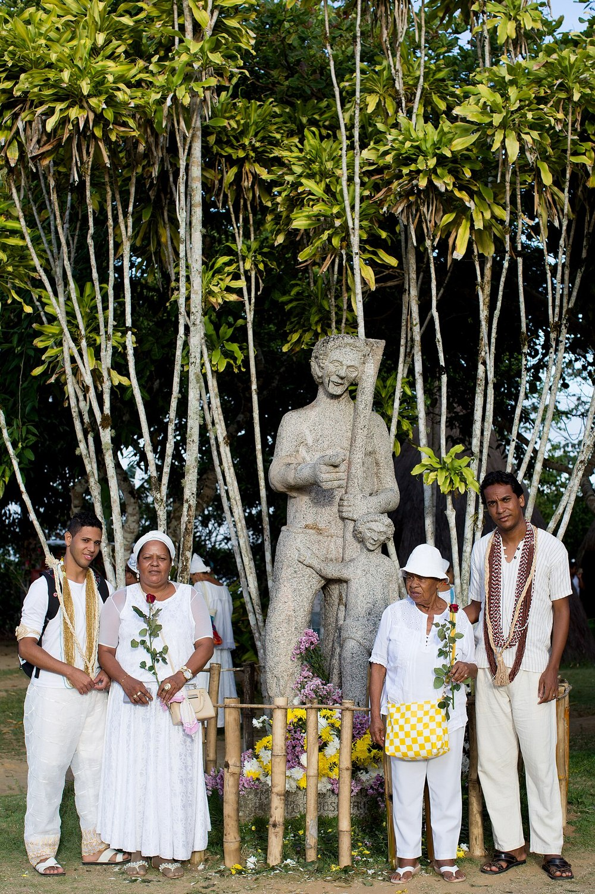

O que é consciência negra
É a memória, o orgulho e a luta da população negra brasileira. O 20 de novembro marca a morte de Zumbi dos Palmares, em 1695, e é o Dia Nacional de Zumbi e da Consciência Negra — feriado nacional desde 2023.
Sobre
Este site reúne as pesquisas da turma sobre 40 personalidades negras que transformaram o Brasil. O centro do projeto é Zumbi dos Palmares e o Quilombo dos Palmares — mas cada card é um aluno contando outra história.

É a memória, o orgulho e a luta da população negra brasileira. O 20 de novembro marca a morte de Zumbi dos Palmares, em 1695, e é o Dia Nacional de Zumbi e da Consciência Negra — feriado nacional desde 2023.
Cada aluno ficou responsável por uma personalidade, pesquisou em fontes confiáveis e escreveu um resumo. O site organiza as 40 pesquisas em um template único, para que todas as histórias tenham o mesmo espaço e o mesmo peso.
Nada de fatos inventados. Toda página lista as fontes consultadas. Imagens só com licença livre e crédito. Religiões de matriz africana são tratadas com o nome correto e com respeito.
Contraste alto, navegação por teclado, textos alternativos nas imagens e respeito a quem prefere menos animação no sistema. Um site sobre consciência negra não pode excluir ninguém.
HTML, CSS e JavaScript puros. Sem framework, sem build, sem banco de dados. Roda em qualquer navegador e é publicado de graça no GitHub Pages.
Pesquisa: alunos da turma. Orientação: professor responsável. Tipografia: Anton e Inter (Google Fonts). Imagens: Wikimedia Commons, com autor e licença indicados em cada ficha. Todo o conteúdo textual é de responsabilidade dos autores das pesquisas.